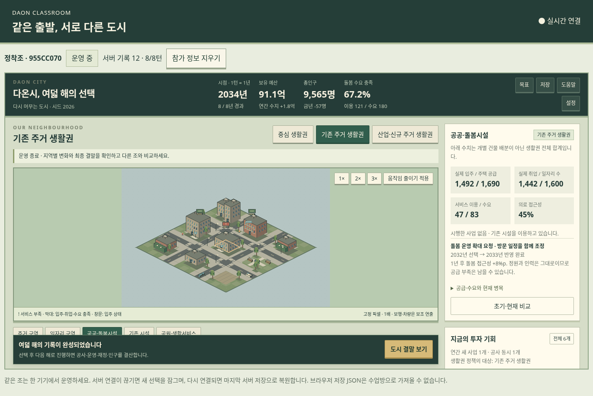

여러분은 다온시의 운영자입니다. 같은 도시에서 출발하지만, 어디에 무엇을 먼저 투자하는지에 따라 서로 다른 미래를 만듭니다.
① 인구 문제의 원인과 지역별 차이를 설명한다.
② 정책의 효과와 한계를 주거·일자리·서비스·재정의 관계로 설명한다.
③ 인구 증가와 생활 여건 개선을 구분해 지속가능한 도시를 평가한다.
출생이 사망보다 적어도 전입이 많으면 인구가 늘 수 있습니다. 반대로 출생이 있어도 더 많은 사람이 다른 지역으로 떠나면 인구가 줄 수 있습니다.
| 개념 | 뜻과 살펴볼 점 |
|---|---|
| 저출생 | 출생 규모가 낮은 현상. 합계출산율은 현재 연령별 출산 수준이 유지된다고 가정할 때 여성 1명이 평생 낳을 것으로 예상되는 평균 출생아 수이며, 출생아 수 자체와 다릅니다. |
| 고령화 | 전체 인구에서 고령 인구가 차지하는 비중이 높아지는 현상. 기대수명 증가와 낮은 출생 수준 등이 함께 영향을 줍니다. |
| 인구 이동·지역 격차 | 일자리·주거·교육·서비스 등을 고려한 이동이 지역별 인구와 생활 여건의 차이와 연결됩니다. |
| 인구 과잉 | 빠른 인구 증가에 식량·일자리·기반 시설·주택 공급이 충분히 대응하지 못하는 문제를 살펴봅니다. 사람 수만으로 생활 여건을 판단하지 않습니다. |
이 도시의 문제는 사람의 수일까요, 일자리·주택·서비스의 배치와 이용 조건일까요? 두 문제가 어떻게 연결되는지 찾아봅시다.
제공된 사진의 인구 문제와 해결 방안을 수업용으로 재구성했습니다. 국가·지역의 상황은 다양하므로 아래 설명을 모든 지역에 똑같이 적용하지 않습니다.
| 문제 | 원인과 영향 | 대응 방향 |
|---|---|---|
| 빠른 인구 증가·도시 집중 | 공급 속도보다 수요가 빠르게 늘면 식량·일자리·주택·시설 부족이 나타날 수 있습니다. | 인구 부양력(자원·기술·생산 조건이 지탱할 수 있는 인구 규모) 개선, 기반 시설 확충, 중소 도시·농촌의 생활 여건 개선. |
| 저출생 | 양육·주거·교육 부담, 일과 돌봄의 병행 어려움, 고용 여건과 가족·삶에 대한 가치관 변화 등이 복합적으로 작용합니다. | 양육 지원, 보육 확충, 출산·육아휴직과 일·생활 균형, 성평등한 돌봄 분담 등. |
| 고령화 | 노동 공급과 돌봄·의료 수요, 사회 보장 지출의 구성이 달라집니다. | 의료·이동 접근성, 연금 등 노후 소득 보장, 정년·고용 제도와 직업 훈련, 지역 돌봄과 시설 재편. |
| 지역 인구 격차 | 일자리·교육·서비스의 지역 차이와 이동이 맞물립니다. 집중 지역에는 주거비·교통 부담, 유출 지역에는 시설 유지의 어려움이 생길 수 있습니다. | 지역 일자리와 정주 여건, 교육·의료·이동 서비스, 인구 규모에 맞춘 시설 배치 개선. |

| 어디를 볼까? | 어떻게 읽을까? |
|---|---|
| 상단 핵심 정보 | 보유 예산은 현재 가진 돈, 연간 수지는 1년의 수입−지출입니다. |
| 생활권과 시설 정보 | 주택 공급≠실제 입주, 일자리 수≠실제 취업, 시설 정원≠실제 이용입니다. |
| 정책 검토 창 | 투자비·유지비·완공 시점·직접 효과·효과의 조건을 확인한 뒤 시행합니다. |
| 결산과 지도 | 공사→완공→운영 변화와 지표가 함께 달라지는지 확인합니다. |
한 조에 조작 기기 하나를 사용합니다. 운영자는 조작과 제안, 분석가는 비용·조건·결과 확인을 맡고 4턴 뒤 교대합니다. 접속이 끊기면 서버 기록으로 복원될 때까지 기다립니다. 수업 중 “참가 정보 지우기”는 누르지 마세요.
아래 비용·기간은 게임 규칙입니다. 실제 정책 비용이나 효과를 뜻하지 않습니다. 1턴은 1년, 한 판은 8년입니다.
| 정책 / 범위 | 투자 | 준비 | 연간 유지 | 직접 변화와 조건 |
|---|---|---|---|---|
| 빈집 정비와 주거 지원 선택 생활권 | 22억 | 2년 | 1억 | 주거 가능 공간 증가. 입주는 일자리·정착 조건에 따라 달라짐. |
| 지역 일자리·직업 교육 선택 생활권 | 18억 | 1년 | 2억 | 일자리와 돌봄 인력 여건 개선. 노동 공급이 한도. |
| 복합 돌봄센터 전환 선택 생활권 | 24억 | 1년 | 3억 | 돌봄 정원 증가·시설 전환. 인력·접근성·수요가 이용을 제한. |
| 의료·이동 연결 도시 전체 | 10억 | 즉시 | 2억 | 의료·돌봄 접근과 이웃 생활권 연결 개선. |
| 이주민 정착·지역사회 연결 도시 전체 | 8억 | 즉시 | 1억 | 정착 연결 개선. 빈 주택과 일자리 없이는 유입 제한. |
| 저이용 시설 재편 선택 생활권 | 16억 | 1년 | 2억 절감 | 기존 시설 재편, 접근·인력 여건 개선과 비용 절감. 정원 축소에 유의. |
| 교사가 선택한 목표 | 목표를 확인할 때 |
|---|---|
| 정착 기반 | 누적 순이동 +80명, 취업 +40명 이상. 인구 총수 증가와 같은 뜻은 아닙니다. |
| 생활 여건 | 돌봄 충족 85%, 의료 접근 78% 이상. 인구 증가 자체가 필수 조건은 아닙니다. |
| 공통 기본 조건 | 예비금 3억 이상, 확정 사업의 유지비를 반영한 연간 수지 0 이상, 운영비 전액 지급, 기본 돌봄 충족 40% 이상. |
| 선택한 생활권 | 문제를 보여주는 지표·지도 상태 | 먼저 해결할 이유 |
|---|---|---|
| | | |
우리의 첫 가설: __________ 정책을 __________ 생활권에 시행하면, __________ 조건이 개선되어 __________ 지표가 달라질 것이다.
| 확인할 것 | 첫 번째 선택 | 두 번째 선택 |
|---|---|---|
| 선택한 턴 / 정책 / 대상 | | |
| 정책 전 문제를 보여주는 수치 | | |
| 투자비 / 유지비 / 완료 시점 | | |
| 예상 효과와 필요한 조건 | | |
| 실제 결과: 언제, 무엇이 변했나? | | |
| 미룬 대안과 이유 | | |
예상과 다른 점은? 공급·인력·접근성·수요·주거·일자리·재정 중 어떤 조건이 영향을 주었는가?
교사 차트에서 같은 지표·같은 턴을 비교합니다. 초기 시나리오·목표·시드가 같은지도 확인하세요.
| 지표 | 우리 조 초기 → 비교 턴 | 다른 조 같은 턴 |
|---|---|---|
| 총인구 / 인구 증감 | ||
| 실제 취업 | ||
| 돌봄 충족 / 의료 접근 | ||
| 보유 예산 / 연간 수지 |
주장: 우리 도시는 __________________________ 면에서 개선되었다.
근거: __________턴의 __________ 지표가 __________에서 __________로 변했다.
이유: __________ 선택이 __________ 조건을 바꾸었기 때문이다.
감수한 점: 개선 과정에서 미루거나 해결하지 못한 것은 무엇인가?
공통 질문: 인구가 감소했더라도 생활 여건이 좋아졌다고 판단할 수 있는 근거는?
현실로 확장: 게임에 충분히 나타나지 않은 실제 인구 문제의 원인·해결 조건 한 가지는?
지속가능한 인구 정책은 __________________________만 늘리는 것이 아니라, __________________________도 함께 고려해야 한다.